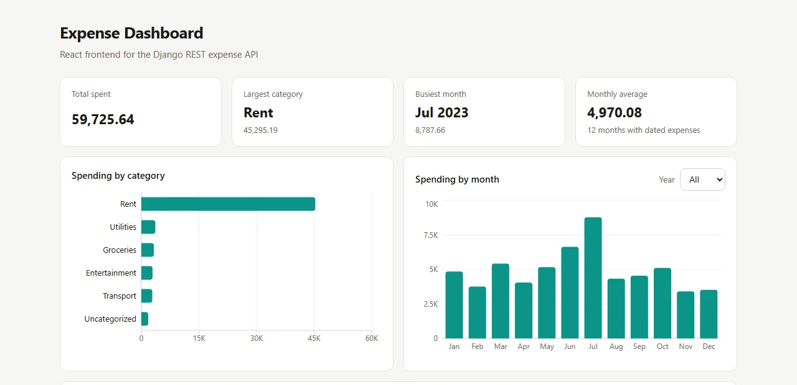
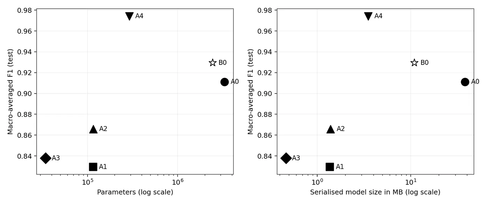

I work on health information systems at Nyaya Health Nepal: a Bahmni electronic health record built on OpenMRS, OpenELIS and Odoo, and the Integrated Health Dashboard for the health ministry of Karnali Province.
Before that I built Laravel, CodeIgniter and WordPress applications for clients at three companies in the Kathmandu valley. Most of my work is in Python and PHP, on PostgreSQL and MySQL, with JavaScript and TypeScript on the front end.
Current role
EHR Junior Developer, Nyaya Health Nepal, since Sep 2024
Education
B.Sc. CSIT; M.Sc. CSIT in progress. Tribhuvan University
Each piece of work is marked with my part in it. Personal and academic projects are my own code and are public on GitHub. Work done for employers is described in words, without code or screenshots.
A Bahmni-based electronic health record that I extend, upgrade and connect to other systems, and a provincial health dashboard delivered with the development team.
System I work on Bahmni EHR: customising OpenMRS, OpenELIS and Odoo with Python, PHP and JavaScript, and maintaining the REST, JSON-RPC and XML-RPC integrations between systems.
Built by me Moved custom Odoo 10 features to Odoo 16 and tested each one after the move.
Built by me Insurance claim integration in Odoo: eligibility check, claim submission and a co-payment option.
Built with a team Integrated Health Dashboard for the health ministry of Karnali Province: a Django application that puts hospital data into one view.
An API that imports expense records from CSV, rejects a bad file as a whole with line-numbered errors, and serves reports computed in the database. A React and TypeScript dashboard sits on top of it. 51 automated tests run on every push.

The dashboard running against the sample data set of 300 records.
A student records API in plain PHP, rebuilt from a set of separate scripts. Search, reports and the change history live in MySQL as stored procedures and triggers, and every query goes through prepared statements. 33 tests run against MySQL 8 on every push.
PHP 8.1 · PDO · MySQL 8 and MariaDB · stored procedures · triggers · PHPUnit · GitHub Actions
An ablation study on 38 classes of plant leaf disease: a small CNN changed one idea at a time and measured for accuracy and cost. While preparing the data I found that 62.7% of the public dataset's validation images are copies of training images, so I rebuilt the splits by source photograph. The best custom model reached 0.974 macro F1 on 9,166 held-out images with 8.4 times fewer parameters than the pretrained MobileNetV2 reference.

Macro F1 against parameter count and model size. A4 is the custom CNN with inverted residual blocks; B0 is the pretrained reference.
Python · TensorFlow · Keras · scikit-learn · Streamlit
Practice API for a small blog: Sanctum token login, admin and editor roles, a post policy, custom middleware for request IDs, JSON responses and role checks, and 36 feature tests. Drafts return 404 rather than 403, so they do not reveal that they exist. Built on Laravel 10 to match my other Laravel work from 2023.
My B.Sc. CSIT project: a Django app and JSON API that classify news text with TF-IDF features and multinomial Naive Bayes, at 85.4% accuracy on a 25% test split. The training data is 2016 to 2017 US news, so the model does not carry over to Nepali news.
A catalog in plain JavaScript with search, genre filters, sorting, a watchlist and ratings saved in the browser, and filters kept in the URL so a view can be shared. The logic is written as pure functions and tested with Node's built-in test runner. Rebuilt from a static page I made in 2022.